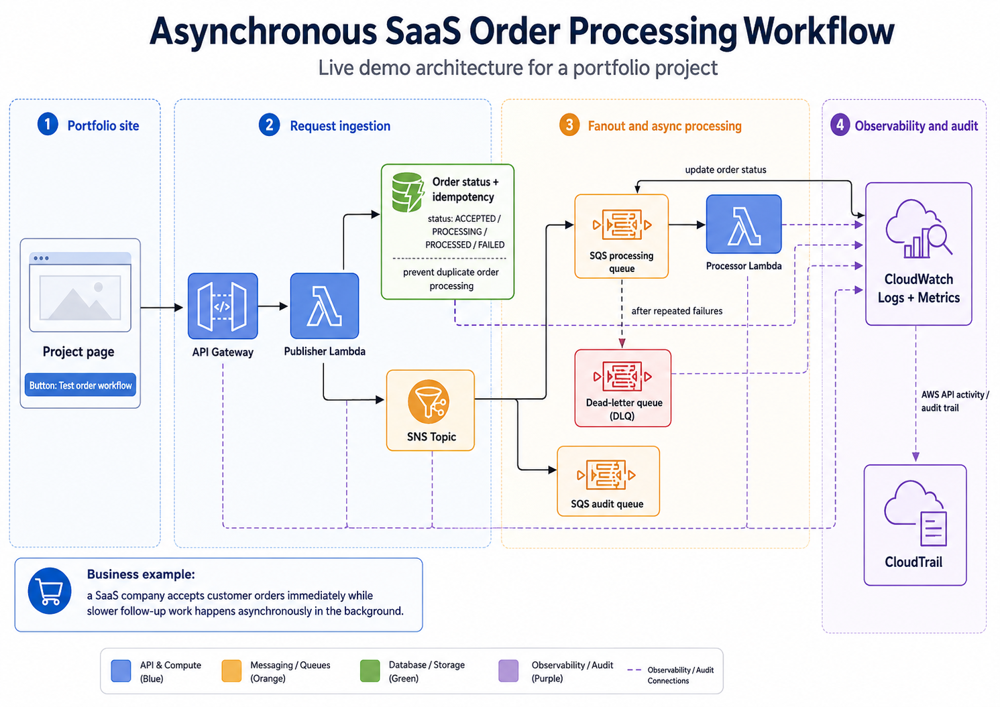

SOLUTION ARCHITECTURE
Accept the order immediately, then process it asynchronously
The diagram shows how a live project page can submit a demo order into an AWS workflow. The request is accepted quickly, published as an event, processed in the background, tracked in DynamoDB, and monitored through CloudWatch and CloudTrail.

Click the button to create a demo order and watch the asynchronous workflow complete.
Run a safe sample order through the live AWS workflow. The page creates an order through API Gateway, then polls the status API until the asynchronous SQS/Lambda processing step updates DynamoDB to completed.
HOW IT WORKS
Event fanout, queue buffering, status tracking, and failure isolation
API Gateway receives the order request from the project page and invokes a publisher Lambda. The publisher creates or checks the DynamoDB order record, uses the order ID for idempotency, and publishes the order event to SNS.
SNS fans the event out to three SQS queues: a processing queue, an audit queue, and a notification queue. The processing queue triggers a processor Lambda that performs the background order work and updates the order status in DynamoDB. The audit queue keeps an independent copy of the event for inspection and troubleshooting.
If processing repeatedly fails, the message is moved to a dead-letter queue instead of being lost. CloudWatch provides logs and metrics for runtime behavior, while CloudTrail provides an AWS API audit trail for account-level activity.
IMPLEMENTATION EVIDENCE
Detailed build notes and implementation proof are documented in GitHub
The repository will contain the project README, Lambda source code, manual build notes, architecture evidence, CloudWatch and CloudTrail screenshots, DLQ verification, cleanup notes, and a CloudFormation version after the manual build is understood.
View project on GitHub